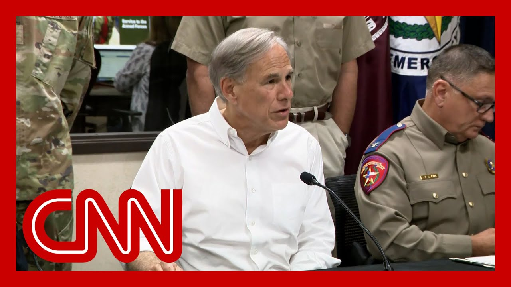

【CNN News 20250707 美国德州州长通报洪水最新情况：至少80人死亡、41人失踪】
Summary: Governor Abbott addresses families awaiting news of missing loved ones, confirms 59 deaths in Kerr County and 10 statewide, emphasizes ongoing search efforts amid new flood threats, and thanks federal and local responders for rapid disaster support.
摘要： 州长阿博特向等待失踪亲人消息的家庭发表讲话，确认克尔县59人死亡及全州10人死亡，强调在新洪水威胁下持续开展搜救，并感谢联邦和地方救援人员对灾情的快速响应。

⏱️ Estimated Reading Time: 49 min
📚 四级生词 📚 六级生词 📚 雅思生词 📚 托福生词 📚 专八生词 📚 SAT生词 📚 考研生词 📚 GRE生词 📚 高考生词 📚 其它生词生词
One of the most important things that we can do is to address their greatest concern.
我们能做的最重要的事就是解决他们最关切的问题。
And that is there are so many families that are still waiting to learn about their loved one, and we are working 24 over seven to get the information that will be able to answer their question.
许多家庭仍在等待亲人的消息，我们正全天候工作以获取能解答他们疑问的信息。
What I can tell you is several things.
我要向各位通报以下几点。
The opportunity yesterday to visit camp mystic and get to see firsthand what happened there, as well as all the way downstream after that.
昨天我实地考察了神秘营地及下游地区。
And it was nothing short of horrific to see what those young children went through.
那些儿童经历的一切堪称恐怖。
And we will remain 100% dedicated, searching for every single one of the children who were at camp mystic, as well as anybody else, and the entire riverbed, you know, to make sure that they're going to be recovered.
我们将全力搜寻神秘营地的每个孩子及其他失踪者，确保整条河床区域无一遗漏。
We know that parents and families, they want information, they want closure, and we want them to know that we are working as swiftly as possible to get them accurate information that will provide that closure.
家属需要信息和结果，我们正全力提供准确信息以给他们交代。
I do want to thank the local officials, city and county and otherwise, who also are working around the clock to make sure they are addressing those concerns.
感谢昼夜工作的市县各级官员。
The information I'm going to give you is, as of this current moment in time.
以下是最新数据。
Knowing that this information will constantly change throughout the remainder of today as well as in the coming days.
请注意这些数据会持续更新。
in, Kerrville and Kerr County, there are 59 confirmed deceased.
克尔县确认59人死亡。
There's still 11 missing from Camp Mystic, separate from there in the Central Texas area.
神秘营地仍有11人失踪，与中部其他地区分开统计。
There are confirmed ten deceased and across the state and all the areas affected by flooding.
全州洪灾区域共确认10人死亡。
There are 41 known missing.
目前41人失踪。
So important to emphasize this, especially in the Kerrville area, there were so many people who were just camping out, not children in camps, but adults camping out near the river, people in RVs and things like that.
需特别强调，克尔县许多遇难者是河边露营的成人或房车游客。
people who are missing who are not on the known confirmed missing because we don't yet know who they are.
部分失踪者尚未登记，因其身份未明。
We will maintain our ongoing search entire river system, to find anybody who may be missing.
我们将持续搜索整条河道。
One thing that could help this is, if you are a relative or friend of someone that you think was in Kerrville or Kerr County that you think is missing, please contact the local officials in Kerr County and let them know, that you have the name, identification and other information about a person who is suspected to be missing.
知情者请向克尔县当局提供失踪者具体信息。
If, however, you don't have confirmed information about that and you're making phone calls, you're slowing down the process of the first responders being able to respond to those who are clearly identified as missing.
无确切信息者请勿致电，以免影响救援效率。
If you're doing that, you're interrupting official business and that could be potentially illegal.
此举可能涉嫌妨碍公务。
Call only if you have, specific information.
仅在有确切信息时联系官方。
While we continue the search process in Kerr County.
我们继续克尔县搜救的同时。
we are now also beginning the process of responding to the disaster that took place.
已启动灾后响应。
Includes things like debris removal.
包括清理废墟。
Anybody who's seen any images whatsoever in the Kerr County area, you know, there's debris all over the place that makes roads impassable, that makes, reconstruction projects, unachievable.
克尔县遍地废墟阻碍交通和重建。
that makes search process, more difficult.
也增加搜救难度。
And, the state and local governments are working now on that debris removal process.
各级政府正开展清理工作。
That process is improved.
效率已提升。
because of President Trump's swift, declaration of, of our major disaster declaration.
得益于特朗普总统快速批准重大灾难声明。
He ensured, in, in less than 24 hours, that that major disaster declaration was approved, ensuring that state and local governments are going to have more resources to be able to respond to that disaster.
24小时内获批的声明确保了各级政府获得更多救灾资源。
More resources to begin the debris removal.
更多资源用于清理。
More resources to help individuals who have been impacted by this as well as local governments that have been impacted by this.
更多资源救助受灾民众和地方政府。
Bottom line is this.
关键是。
the swift and very robust action by President Trump is an extraordinary help to our response.
特朗普总统的迅速行动极大支援了救灾。
I also want to thank, Homeland Security Secretary Kristi Noem, with whom I spent the day yesterday, I've been doing this a long time, and I've never seen anybody as responsive and as quickly in her response as what she was yesterday.
感谢国土安全部长诺姆的高效协作。
She didn't wait to get back to us.
她第一时间响应。
She was able to, in a matter of minutes, get answers, to very important demands and, on behalf of the state of Texas, we cannot thank her or the Trump administration enough.
分钟级解决关键需求，德州由衷感谢其团队。
I've also been in contact with.
我还联系了。
And people reached out, from, Secretary Kennedy, Secretary Burgum, and others that, in the entire administration are a tremendous help.
肯尼迪部长、伯古姆部长等政府成员提供了巨大帮助。
I also want to add that, there are, governors across the country that have been in contact with either myself or, with Chief Tim Kidd or state agencies offering their assistance, including, Sarah Huckabee Sanders and the governor of Arkansas, Kim Reynolds, the governor of Iowa, and Jim Pilling, the governor of Nebraska.
多州州长也主动提供支援。
Bill Lee, the governor of Tennessee, Glenn Youngkin, the governor of Virginia, Josh Shapiro, the governor of Pennsylvania, the governor of Oklahoma, and Governor Landry in Louisiana.
包括田纳西、弗吉尼亚等州州长。
And again, I'm sorry if I missed some.
如有遗漏敬请谅解。
I know there's there's others, that are constantly reaching out.
还有许多持续联络的伙伴。
We're here, as I mentioned, in Austin today, because there have been lives lost in this greater region.
今日在奥斯汀是为协调大区救援。
And importantly, dangers over the next 24 to 48 hours that could pose public safety threats, to, to people in these regions.
未来48小时仍存在公共安全威胁。
There is heavy rainfall.
暴雨持续。
This already occurred and there's more heavy rainfall that's expected that will lead to potential flash flooding broadly in these regions, the big country, Concho Valley, central Texas, and once again, Kerrville.
预计新一轮暴雨将引发更大范围山洪。
The point is this if you're in any of those regions, you need to realize for one, you're in an area with land that's already saturated, saturated with water.
这些区域土壤已完全饱和。
But for now, the when more water comes down, that could lead to rapid flash flooding events.
更多降雨将导致突发洪水。
Now, there's nothing expected at this time to the magnitude of what we're seeing in Kerrville.
预计不会达到克尔县灾情规模。
That said, flash flooding can occur at lower levels of water than what happened in Kerrville is a particular threat for people who are driving on roadways.
但低水位也可能引发威胁道路安全的山洪。
Some of the lives lost in central Texas, where people who were swept away in vehicles or in similar crossing type situations know that rising water on roads can occur very rapidly.
中部遇难者多因车辆被急流冲走。
You may think you can drive through it, only to find out when you're in there that it's too late and you're getting swept away.
涉水驾驶极其危险。
And so we urge everybody to be extraordinarily cautious for the next 24 to 48 hours.
未来48小时请保持高度警惕。
If there's any water on the road, you got to be safe.
路面见水务必避险。
There's an old saying for a reason because it's true.
有句老话很有道理：
And that is turn around, don't drown.
"回头绕行，切勿涉险"。
You don't need to get from point A to point B if it's going to risk your life, your job.
勿为行程冒生命危险。
The most important thing you can do is to protect your lives.
生命安全最重要。
And taking a step back for all of us up here.
我们官员的职责。
that's our number one job.
首要是保障安全。
we put public safety first, and we'll worry about the physical damage second.
先保安全，再管损失。
There are still public safety issues and lives to be saved in Kerr County, their lives to be saved.
克尔县仍存在救援机会。
And all these reasons that I just mentioned here.
综上所述。
We want our fellow Texans to be safe and secure.
我们呼吁德州同胞注意安全。
And you can do more about that yourself than anybody else can.
自我保护最为有效。
with that towel, I think.
就此。
Pass it to you, Colonel.
有请上校。
Yes, sir.
遵命。
Colonel Freeman Martin of the Texas Department of Public Safety.
德州公共安全部弗里曼·马丁上校。
It's been a tough three days for Texans.
这是德州艰难的三天。
And I can assure you here at this table today that everything that can be done is being done.
我们正竭尽所能。
Currently, we have operations going on in several different counties.
多县同步开展行动。
Williamson County had three people missing.
威廉姆森县3人失踪。
They recovered one.
已找到1人。
Two are still missing.
2人仍失踪。
ongoing searching.
持续搜索中。
Burnet County is missing.
伯内特县。
Two people missing.
2人失踪。
The fire chief and a 17 year old female.
消防队长和17岁女性。
the Department of Public Safety is offering, any and every resource that we have to help with those searches, whether it be boat teams, rescue divers, helicopters, drone operators, drones.
我们动用船只、直升机等全部资源。
So there's a lot of work being done.
工作量大。
the governor is very active.
州长高度参与。
The ground is saturated.
地面饱和。
So now a little bit of rain.
少量降雨。
Rainfall in watershed can cause issues.
集水区降雨可能引发问题。
is well aware of that.
我们清楚这点。
the ground was saturated.
土壤已饱和。
They knew that had issues.
已知风险。
And they evacuated neighborhoods, which saved lives.
疏散行动拯救了生命。
and all that being done, they still have, three that were washed away.
仍有3人被冲走。
I'll touch on Kerr County.
谈谈克尔县。
We have about 230 DPS per personnel assigned to Kerr County.
部署230名公共安全部人员。
And everybody thinks about search and rescue and what we're doing.
重点在搜救。
There's a lot of stuff going on.
多线并进。
we're filling every gap.
填补所有空缺。
And first off, this is nothing negative about Kerr County.
并非批评克尔县。
They've got a very good sheriff.
他们有好警长。
their fire chief is exceptional.
消防队长优秀。
Their police Everybody's working together.
全员协作。
The outpouring of support.
支援涌现。
There's a lot of, volunteers.
大量志愿者。
There's a lot of good stuff going on, but there's a lot of there's there's just a huge need.
需求仍巨大。
And it's a it's a large area.
区域广阔。
So we're providing 18 tactical marine units with boats.
提供18艘战术船只。
We've got 65 CID personnel assigned to over 230 in total.
总计超230人。
11 Texas Rangers, 28 from our special operations group.
11名游骑兵，28名特勤组员。
Our Swat guys.
特警队员。
In addition to that, we've got, nine helicopters with tactical flight officers.
9架直升机。
we're providing cell towers and trying to solve the issues with the radio communications and their cell phone communications.
架设通讯设备。
we provided communications operators to embed with them to handle 911 calls and handle calls with concerned family members dealing with the families of these missing individuals.
安排通讯专员处理家属来电。
There's there's no higher priority for us than finding those children.
儿童搜救是最高优先级。
we've assigned commission personnel and victim service personnel to the family that are working there with them.
安排专员服务家属。
24 seven can answer to address any needs that they have.
24小时响应需求。
And get them any information they have.
提供所有信息。
this is this is tough work, recovering them.
搜救艰巨。
So we have victim service personnel there to work with officers that are conducting the search operations.
安排专员配合搜救警员。
Additionally, we have some unidentified, individuals at the funeral home, adults and juveniles.
殡仪馆有未识别遗体。
The Texas Rangers are collecting DNA from family members and from the deceased, victims.
游骑兵正在采集DNA。
And we're flying those to the University of North Texas in Dallas.
送达拉斯大学检测。
And we will have answers with rapid DNA in hours, not days, to get some closure and information back to these families.
数小时内出结果。
We have, in the last couple of days, an outpouring of of, support from our federal partners, DEA, DEA, and FBI.
联邦部门大力支援。
We've embedded them with our search and rescue teams.
编入搜救队。
This is tough work.
任务艰巨。
It's hot there in the mud to remove and debris.
泥泞酷热。
There's snakes.
有蛇。
There's water moccasins.
含水蛇。
This.
这。
This is God's work that they're doing.
他们在执行神圣工作。
So, you know, the top priority is the family and the victims.
家属和受害者是首位。
Pray for them.
为他们祈祷。
But throw the throw our first responders in there because there's a lot of good work going on.
也请为救援人员祈祷。
we're not taking away from any resources from Kerrville to restage here.
未挪用克尔县资源。
We're pulling from South Texas, West Texas and north Texas into central Texas to prepare for our emergency response.
调集全州资源支援中部。
We're well prepared.
准备充分。
The legislature, the governor in previous years, has been overwhelmingly supportive of law enforcement and gave us the resources.
立法机关长期支持执法部门。
So we're prepared to respond to events like this in multiple regions of the state at the same time.
具备多区域同步响应能力。
So, governor, thank you.
感谢州长。
Thank you.
谢谢。
Very much.
非常感谢。
now, General Seltzer, with the Texas National Guard.
有请国民警卫队塞尔泽将军。
The good afternoon.
下午好。
The Texas Military Department, remains decisively engaged across the flood operations area.
国民警卫队全力投入救灾。
Our current force composition.
现有兵力。
We have 230 personnel operating.
230人执勤。
We're flying eight helicopters.
8架直升机。
And we've increased the size of our force of high profile, military vehicles to help evacuate people from high water areas.
增派重型车辆协助撤离。
We've also expanded our operations area to not only include Kerrville, but we now have, personnel operating in San Saba and Burnett.
扩大行动至圣萨巴等县。
The additional resources we've added since our last briefing, our behavioral health officer in Kerrville, a chaplain in Kerrville.
新增心理辅导师和牧师。
We also send a chaplain to San Saba.
向圣萨巴派遣牧师。
We've expanded the state's air operations Center, which is a multi-agency air coordination center hosted by TMT.
我们扩大了州空中行动中心，这是由TMT主持的多机构空中协调中心。
But it includes every agency that operates across the interagency in Texas.
但它涵盖了得州所有跨机构运作的部门。
So inside that operation center, we can ensure that the right asset is going to the right location to do the right job.
因此在该中心内，我们能确保正确资源抵达正确位置执行任务。
today we've launched the MQ nine Reaper remotely piloted aircraft out of Houston.
今天我们从休斯顿出动了MQ-9“死神”遥控飞机。
That aircraft departs Houston, goes out over the Gulf of America, and climbs to 18,000ft, and then, along a special FAA corridor, traverses over to the Kerrville area to conduct, Incident awareness and assessment operations.
该机从休斯顿起飞，经墨西哥湾爬升至1.8万英尺，沿FAA特殊空域走廊飞往克尔维尔地区执行事件监测与评估任务。
It's truly an eye in the sky for our search and rescue people.
它确实是我们搜救队伍的“空中之眼”。
I'd like to thank the Federal Aviation Administration today, due to weather at 18,000ft. we could not transmit transit from the Gulf of America to the Kerrville area.
我要感谢联邦航空管理局——因1.8万英尺高空天气，我们原无法从墨西哥湾飞往克尔维尔。
The FAA granted a temporary flight, restricted area through a lower altitude, which allowed our aircraft to safely transit across Texas and operate in the Kern County area.
FAA批准了低空临时禁飞区，使飞机安全穿越得州并在克恩县作业。
In terms of rescues and evacuations for the Texas Military Department, we have a total of 525, rescues or evacuations, 366 have been by air in 159 by ground.
得州军事部共执行525次救援/撤离，其中366次空中、159次地面。
Of those count, 20 ground evacuations occurred in San Saba.
其中20次地面撤离发生在圣萨巴。
In five ER, evacuations occurred in Burnett.
5次紧急撤离发生在伯内特。
That includes five.
包括5次。
Thank you. Thank you.
谢谢。
That was the Lcra there to fill this.
这是LCRA（下科罗拉多河管理局）的补充。
Good afternoon. Wilson, general manager of lower River authority.
下午好，我是下河管理局总经理威尔逊。
I think the most significant message we have that you'll hear right now is that if and when we get more rain, please stay off the lakes high.
最关键的信息是：若再遇降雨，请远离高水位湖泊。
The lakes have a lot of debris right now.
目前湖中有大量残骸。
It's not safe to be boating. It's not safe to be out there.
划船不安全，外出不安全。
We'll let you know when it is.
安全时我们会通知。
But critically, stay off the lakes.
但关键是远离湖泊。
It's July. People are used to summer, and this is not a good time to be out there to.
七月本是夏季，但现在不适合外出。
We're working very closely with law enforcement.
我们正与执法部门紧密合作。
We have our Rangers deployed to Burnett County right now with our mobile command center to support the activities up there.
我们已派遣护林员携移动指挥中心至伯内特县支援。
So partnership working, all of the law enforcement team, and everyone that's showing up to help assist is very critical time for us.
因此与执法团队及志愿者的合作至关重要。
Next. What the governor said we have a lot of saturation.
接下来：州长提到土壤已饱和。
We open gates up. it works historically, the last couple of days.
过去几天我们开放闸门收效良好。
Those are closed right now.
现闸门已关闭。
We're ready. Just in case we need to move out in more than 350,000 acre feet to the high the lakes to Buchanan and Lake Travis.
我们已准备必要时向布坎南湖和特拉维斯湖转移35万英亩英尺水量。
We're 67% full. We have a lot of room and headroom in case more water does come in to make sure those reservoirs do what they're supposed to do, which is to capture the water for the future and protect against flooding.
水库现蓄水67%，有充足容量应对来水，确保其蓄洪防涝功能。
Thank you, governor. Pretty good, cloud chief Jim. Kate.
谢谢州长。很好，云层主管吉姆·凯特。
And, I want to want to remind everyone life safety is still our number one priority.
我需重申：生命安全仍是首要任务。
And, what I mean by that is, and Colonel Martin said it very well.
正如马丁上校所言——
Kerrville and Kerr County have great local emergency managers and responders. They really do.
克尔维尔和克尔县有优秀的应急管理者与响应者。
But they're a community of about 55,000 people.
但该社区仅约5.5万人。
And they had a lot of people there that were not from that area visiting, vacationing and their resources.
且有许多外来游客，资源紧张。
And this is what state agency, what the state government does when a local community gets overwhelmed as we send in additional resources.
这正是州政府在当地超负荷时增派资源的作用。
So our hats are still off to all of those local responders that live and work in that community and that their homes and families were also impacted, and they're still there on the job.
我们向坚守岗位的本地响应者致敬——他们的家园同样受灾。
We owe them a great amount of gratitude.
我们深表感激。
Second, we continue with our search not only in Kerr County, but everywhere that we know we have missing people.
其次，我们继续在克尔县及其他失踪者所在区域搜索。
And I need your help in being very cautious.
需大家谨慎协助。
Let's not get wrapped around the axle on the word recovery.
勿纠结于“恢复”一词。
You're going to start hearing the word recovery used in a lot of different context.
该词将出现在多种语境中。
Be very careful how you use that word, because I'm going to be careful how I use that word as well.
请慎用此词，因我亦将如此。
We are going to begin recovery operations.
我们将开始恢复操作。
That is debris cleanup that is opening roads.
即清理残骸、开通道路。
That is not mean we are no longer doing search for live victims because we still are, we are still out there and very much hopes, very much fueled by the compassion that we show for these families, that we are doing everything we can to find their missing loved ones.
这并非停止搜救生还者——我们仍在全力寻找失踪者，满怀对家属的关切。
So please help me in making sure that we're not wasting our time and efforts on debating over the meanings of words.
请勿浪费精力争论术语。
Let's get clarity when we ask those questions.
提问时请明确重点。
second, I'm asking, we've driven around Kerr County and the other areas a lot.
其次，我们已多次巡查克尔县等地。
We have a lot of people that are traveling in because they want to see firsthand the damage.
许多人前来查看灾情。
I'm asking you, if you're not from the community and if you're not involved in our response and rescue and recovery efforts, stay out of the area.
非本地或非救援人员请勿进入。
Stay out of the area because you don't know the area.
因您不熟悉地形。
Another thing I'm getting right this minute during this press conference is reports of an additional wall of water coming down some of the creeks going into the forks.
发布会此刻收到新洪峰涌入支流的报告。
And I want you to think about that for a second.
请各位深思。
If you're not from that area and you don't know the low water crossings, you could find yourself in a very dangerous situation.
不熟悉低水位通道者可能陷入险境。
The next thing is, we see a lot of information on social media about volunteers and spontaneous volunteers being frustrated because they can't help.
社交媒体上许多志愿者因无法协助而沮丧。
We were evacuating parts of the river right now because we're worried about another wall of water coming down in those areas.
我们正撤离部分河段，因担忧新洪峰。
If you're a volunteer there that you're not checked into our operations, we have no way of accounting for you right now.
未登记的志愿者无法被追踪。
There is a process that we use to get volunteers into the response, and I'm asking for your help and to get that message out.
志愿者需通过正规流程加入，请协助传播此信息。
It's not that we think we don't need any help.
并非拒绝帮助。
It's that we want to make sure everyone helping is doing the job that we need, where we need it and when we need it, and we have the ability to communicate with them.
而是确保援助精准有效且可联络。
And then finally, I want to talk a little bit about the word recovery as it relates to the president's We are very excited to begin those recovery operations with our federal partners, who have been here with us in the emergency operations center since last Thursday.
最后谈及与总统相关的“恢复”——我们很高兴与上周四起共事的联邦伙伴启动恢复工作。
So it's before all of the actual flooding and disaster started, and we're going to work very close with those partners to help our local communities and our families that are impacted by this recover from this disaster as fast as possible.
洪水前已开始合作，我们将紧密协作助受灾社区家庭尽快恢复。
Thank you. We'll take a few questions.
谢谢。接下来接受提问。
Go ahead as you go.
请提问。
I know that you mentioned ten deaths in Central Texas. Is there any way you could give us a breakdown of the city's for sure.
您提到中得州10人死亡，能否按城市细分？
Can chief Kidd has. So we're showing reform three in Burnett County, one in Tom Greene County, five in Travis County and one in Williamson County.
基德主管通报：伯内特县3人、汤姆格林县1人、特拉维斯县5人、威廉姆森县1人。
And again, those those numbers are a few hours old. Those numbers could go up. But that's what we had as the time preparing for this briefing.
需注意这是数小时前数据，可能上升。
Second, what happened Tom green. Tom Green. Yes, ma'am. San Angelo area.
其次，汤姆格林县情况？是的，女士。圣安吉洛地区。
You just said something about wild water that you're just now getting reports about. Can you talk more about that, what you're seeing there?
您提到刚收到狂洪报告，能否详述？
Yeah, I'll share some of. So I apologize for looking at my phone during the press conference, but this is the live updates that we're getting right now from the field.
我将分享部分——抱歉发布会看手机，因这是现场实时更新。
Is there are unconfirmed at this point. Reports of additional water coming in.
目前有未确认的新洪水报告。
And as the governor mentioned, there's rain still falling on the area.
如州长所言，该区域仍降雨。
It's not going to take the same amount of rain that caused this damage to make the current water levels rise up, right, because the ground is already saturated.
因土壤饱和，无需同等雨量即可推高水位。
So any rain that falls can be perceived as life threatening rain.
因此任何降雨都可能危及生命。
And so if you're in a low lying area, we need you to move yourself out of that low lying area.
低洼地区人员请立即撤离。
We've got DPS aircraft that are flying up to try to find this wall of water right now, and the people in the reported areas, again unconfirmed, that are on our communication systems.
公共安全部飞机正搜寻洪峰，已通过通讯系统通知报告区域人员（未确认）。
We're asking them to get out of the water and out of the way so that we don't wind up having to do additional rescues.
要求他们撤离水域以免增加救援压力。
Well, Austin, you have mentioned that there are a lot of processing in the same boat. The resources can continue searching in the north in the night and federal resources to continue searching when it's pitch black.
奥斯汀，您提到夜间北部搜索，联邦资源如何在漆黑中继续？
Sure. Well, first of all, on the federal disaster declaration, it applies right now to Kerr County.
当然。首先联邦灾难声明目前仅适用于克尔县。
let let me go back. let me see the total, my disaster declaration counties.
容我查看灾难声明覆盖县总数。
So let me walk you through this. So, I made an original state and then I amended it to add more counties.
最初发布州声明后，我修订增加了更多县。
Let me first go back over those counties. Then I'll explain to you what's going on.
先回顾这些县，再解释现状。
under the state disaster declaration includes, the following counties. Bandera, bear. Burnet, Caldwell. Coke, Carmel. Concho, Gillespie, Guadalupe. Kendall, Kerr. Kimball. Llano. Mason, McCullough. Menard. Reeves, San. Saba. Tom. Green. Travis. In. Williamson.
州声明覆盖：班德拉、贝尔、伯内特、考德威尔、科克、卡梅尔、康乔、吉莱斯皮、瓜达卢佩、肯德尔、克尔、金布尔、拉诺、梅森、麦卡洛克、梅纳德、里夫斯、圣萨巴、汤姆格林、特拉维斯、威廉姆森县。
That means because of that, the state is providing additional resources, for those counties, and state based assistance on the federal For the time being, that includes only Kerr County.
因此州政府向这些县提供额外资源，而联邦援助目前仅限克尔县。
And, they are waiting to see, the magnitude of what happens in other counties before they may potentially expand that the federal disaster declaration to include other counties.
联邦正评估其他县灾情再决定是否扩大声明范围。
So for now, local resources have to stop search and rescue efforts when that's not. We have drones and helicopters that have thermal and night vision and flare where they can search at night.
目前本地资源夜间停止搜救时，我们使用带热成像、夜视及照明弹的无人机直升机继续。
Our special operations groups have that and, at the law enforcement level, we don't really wait for a federal declaration.
特勤组配备此装备，且执法层面不依赖联邦声明。
The feds come. They're they're they're they're helping. They offer, assets and resources.
联邦提供资产资源协助。
you know, this helps with funding and additional resources and bringing in from out of state.
这有助于资金、额外资源及外州支援。
But our local federal partners are they're very involved. So we've, of course, were a lot more productive during the day, but we searched at night and, and we're seeing some really good results and which is good, but the bad news is you will see the death toll rise today, tomorrow.
本地联邦伙伴深度参与。白天效率更高，但夜间搜索也有成效。坏消息是今明死亡数将上升。
One other thing to add to that is the U.S. Coast Guard, part of the federal government was here working long before the declaration was granted based on our partnership and relationships.
另需补充：美国海岸警卫队基于合作关系在声明前早已到场。
So we still have Coast Guard assets here, and they will operate at night as well.
其装备仍在，夜间也将运作。
Thank you for the question. Go ahead.
谢谢提问。请继续。
I also I also referenced, could you talk a little bit more about the warnings that, locals and local officials got the way that, the state and federal government communicated with local officials? And whether you believe that these deaths were preventable.
能否详述地方官员收到的预警及州联邦沟通？您认为这些死亡可避免吗？
So there were multiple steps taken by the state that I'll let, chief could not talk about.
州政府采取多项措施，具体由基德主管说明。
But, the state began setting up operations in preparation for what could happen in Kerr County.
但州政府早前已在克尔县预置行动。
It happened in the early morning hours of the fourth and which is Friday. and the state had, prepositioned, assets and resources in and around that area beginning on Wednesday before the storm on Friday.
洪水发生于周五（4日）凌晨，而州政府从周三起就在该区域预置资源。
as we learn more on Thursday, more assets were provided in various regions.
周四获取更多信息后，向多地区增派资源。
We knew based upon predicted weather, certain regions where the rain may fall.
根据气象预测已知可能降雨区。
there was an inability to know precisely where that rain was going to fall and how much was going to fall, where where it did fall.
但无法精确预测雨量及落点。
And, as far as what, the locals may have done, chief Kidd, my may know may know more than I, but I would leave it up to them to let you know and listen.
地方应对措施请咨询基德主管。
We need to spend a lot of time trying to answer this question.
我们需要花大量时间尝试回答这个问题。
Because from a technical perspective, there are multiple warning systems that are out there.
因为从技术角度看，现有的预警系统有多种。
And all of us can choose to sign up for warning systems in certain areas.
我们都可以选择注册特定区域的预警系统。
Depending on the local government that we're in and the way that their system works.
这取决于所在地地方政府及其系统运作方式。
There's a lot of talk about a program called We're the wireless alert, emergency alert.
人们频繁讨论一个名为“无线警报”的紧急警报项目。
And I pause the integrated public alert and warning system and how they work or sometimes don't work.
我暂停思考了公共警报与预警系统的运作及其失效情况。
And then you have areas where there is no cell phone coverage.
此外，有些区域根本没有手机信号覆盖。
And if there's no cell phone coverage, it doesn't matter how many alert systems you sign up for, you're not going to get that.
若无信号，无论注册多少警报系统都无法接收信息。
And then there's the NOAA weather radios from the National Weather Service.
还有国家气象局提供的NOAA气象收音机。
I'll ask you, how many of you have a know a weather radio by your bed at home?
我想问，你们中有多少人床边备有气象收音机？
And so there can be all kinds of alert systems that are sent.
因此，可能存在各种发送的警报系统。
And we know that some were sent, some general messaging was sent early.
我们知道部分警报已发送，一些常规信息较早发布。
Some urgent warnings were sent at various times.
不同时段也发送过紧急警告。
But just sending the message is not the same as receiving the message.
但发送信息不等于接收信息。
Having a plan to do something when you receive the message and then the ability to implement that plan.
需制定收到警报后的行动计划并确保能执行。
And so I really would love to have a separate conversation with all of you about how we can continue to get the message to the public.
因此我想另开讨论，探讨如何持续向公众传递信息。
About what they need to do when they get a message, what they should do when that message is received.
包括收到警报后应采取的行动。
And how they communicate that back to their loved ones and family members.
以及如何将信息转告亲友。
Let me add this also.
我再补充一点。
And you guys saw this, but, the city manager for Kerrville explained that on the morning of the fourth, he was out jogging at about 330 in the morning.
你们已看到，科尔维尔市经理解释称，4日凌晨3:30他外出跑步。
And it just then began to rain a little bit.
当时刚开始下小雨。
He got home and saw that rain a little bit more, and he saw it after that.
他回家后雨势稍大，之后目睹了后续情况。
The torrent of water that was coming down the river.
河水奔涌成洪流。
And the point that he made was that by the moment of time when they knew the magnitude of the water.
他强调，当他们意识到水量规模时。
It's a difficult decision whether or not to begin evacuating people or not.
是否疏散民众成为艰难抉择。
Because if you have a warning telling everybody to evacuate, you could actually lead them to their death.
因为若发布疏散警告，反而可能致人死亡。
We know that some deaths in Kerrville were people who died, who got swept away, who were trying to evacuate.
科尔维尔部分遇难者是在疏散时被洪水卷走。
And so local officials know the best about the terrain, about the danger spots and things like that.
因此地方官员最了解地形及危险区域。
About who might be able to be able to evacuate those.
也清楚哪些人可能成功疏散。
That would just be getting into a more dangerous situation.
否则只会陷入更危险的境地。
You talked in which you just said kind of about expertise and about just knowing the area.
你刚提到的专业性和对当地的了解。
And that extends also to the National Weather Service folks who are in those offices.
这也适用于国家气象局驻当地人员。
And how years and years of experience.
以及他们多年的经验。
You're currently six vacancies in the local National Weather Service office that covered for county.
当地气象局目前有六个职位空缺。
How what is your perspective on how that could have impacted the warnings that you all were able to get.
你认为这如何影响你们收到的预警？
And how accurate the information you operate?
以及信息的准确性？
So I know nothing about the staffing.
我对人员配置一无所知。
What I do know is what they put out.
我只知道他们发布的内容。
And it's my understanding that what they put out was, kind of the information that, the state was operating off of.
据我所知，州政府依据的是他们发布的信息。
And that is that there were, alerts or warnings about heavy rain potential for flash flooding in certain areas.
即某些区域可能出现暴雨和山洪的警报。
A problem with that is that to most people in the area, would mean one thing, not what it turned out to be.
问题在于当地多数人对此的理解与实际不同。
Because they deal with flash floods all the time.
因为他们常应对山洪。
Just like, put people on notice in these regions of Texas there's the potential for flash flooding.
就像提醒德州这些区域可能有山洪。
But there's no expectation of a water wall of almost 30ft high.
但没人预料到近30英尺高的水墙。
Governor Abbott, on that topic, we know that these numbers can be lifesaving at times.
阿博特州长，这些数据有时能救命。
And a lot of times these forecasters get their information from the National Weather Service.
预报员多从国家气象局获取信息。
Are you communicating with your federal partners on how critical funding is for the National Weather Service in order to issue coverage of this disaster?
你是否与联邦伙伴沟通气象局资金对灾情覆盖的关键性？
Like it's one of the things that we spoke about, when Secretary Noem was in and this is part of ongoing conversations.
正如我们与诺姆部长讨论的，这是持续对话的一部分。
And I'll add this, as you all probably know, we have a special session coming up.
补充一点，你们可能知道特别会议即将召开。
And the way to respond to, like, what happened is going to be a topic for the special session to address to.
如何应对此类事件将是特别会议议题。
Our question, which is part of what you want to address, because there was a bill that was going to create a council to kind of talk about what warning systems.
你的关切包括此前未通过的预警系统讨论委员会法案。
And it was not successful.
该法案未通过。
It, it a concern that there's all these camps on this area.
令人担忧的是该区域存在众多营地。
This is an area that deals with flash flooding, but there were no sirens that were in this area.
该区域常遇山洪却未设警报器。
Can you talk about that and why that hasn't been funded to this point?
能否解释为何至今无资金支持？
Was going to be something that will be looked at as you kind of pointed out, these camps go back almost 100 years.
正如你指出，这些营地存在近百年，将纳入考量。
And they are familiar with the water in the area, probably better than anybody else.
他们对当地水情最熟悉。
And they have their own ways in which to deal with warnings that would involve children, sometimes as young as 8 or 9 years old.
他们有独特的预警方式，甚至涉及8、9岁儿童。
And we need to evaluate, what they know, how they respond, what they need.
需评估其认知、应对方式和需求。
And that's why it's going to be good to have a session with all members working together that will bring different perspectives.
因此需召开会议汇集各方观点。
Because the reality also is this, and that is what's stated in that river basin at that location could be far different than what was needed in some other river basin across the state.
因为现实是，该流域情况可能与其他流域截然不同。
Couple one more folks.
再回答几个问题。
Good question.
好问题。
And, you know, maybe when you have morning people at the camps outside of the automated.
或许营地早晨有人值守而非依赖自动化系统。
But I, I missed the first quarter question.
但我没听清第一个问题。
Did anyone try to get a warning to the people of the camps outside of the automated system?
是否有人通过非自动系统向营地发出警告？
So.
那么。
I mean, I'm not sure that I understand the question.
我不确定是否理解问题。
If somebody go door to door and knock on the doors or.
是否有人逐户敲门。
Yeah, we're just wondering if.
我们想知道。
The official outreach in that area, we talked to the county emergency manager when we were there the first day.
该区域官方联络情况——首日我们与县应急经理交谈过。
And the county does have a plan for that county in the 18 or so camps that are in that county.
该县对境内约18个营地有应急预案。
Probably be really good to ask them that question.
最好直接询问他们。
Let them give you that answer.
由他们回答。
It's a good question.
这是个好问题。
Thank you all.
谢谢大家。
All right.
好的。
Hello again, everyone.
大家好。
I'm Fredricka Whitfield, in Atlanta.
我是亚特兰大的弗雷德里卡·惠特菲尔德。
We continue to watch the press conference.
我们持续关注新闻发布会。
They're coming out of Austin, Texas, and we heard a variety of things.
德州奥斯汀的发布会涉及多方面内容。
You heard from the They're saying they have ongoing concerns about high water.
他们表示持续担忧高水位。
Unconfirmed wall of water that still might be contributing to some of the a variety of tributaries there.
未确认的“水墙”可能影响多条支流。
It is continuing to rain there.
当地降雨持续。
But again, unconfirmed, wall of water.
但“水墙”仍未确认。
And so they're asking people to still stay away from certain, areas.
因此要求民众远离特定区域。
And you heard from the Texas governor, Greg Abbott, who says they continue to search for anyone involved in this storm.
州长格雷格·阿博特称持续搜寻风暴相关人员。
The governor went to Camp Mystic.
州长去过神秘营地。
He says it was nothing short of horrific.
他形容场景“极其恐怖”。
That is an area where they are continuing to look for a number of campers, 11 still missing from that camp.
该区域仍有11名露营者失踪。
And you heard the governor there confirming 59 deceased from Kerr County alone.
州长确认仅克尔县就有59人死亡。
And another ten confirmed, deceased from other areas and 41 overall known missing.
其他地区10人死亡，总计41人失踪。
We've got a team reporters, there in Texas, Isabel Rosales, who is there from Center Point, Texas.
我们的记者伊莎贝尔·罗萨莱斯在德州森特波因特。
And I understand Ed Lavandera is also in Ingram, Texas.
埃德·拉文德拉也在德州英格拉姆。
We'll get to him momentarily to you.
稍后连线他。
Isabel, what are you hearing from that area there?
伊莎贝尔，当地情况如何？
What are the largest concerns?
最大担忧是什么？
Are people also concerned?
民众是否担忧？
Whether it be from persons who are missing or even this unconfirmed wall of water in tributaries nearby?
无论是失踪者还是附近支流未确认的“水墙”？
Fred, it’s It's exactly.
弗雷德，正是如此。
That is the biggest concern That's top of mind is this wall of water.
最担忧的就是“水墙”。
We were just by a tributary of the Guadalupe River over here at Center Point in front of the fire department.
我们刚在森特波因特消防局前的瓜达卢佩河支流。
Where? There.
哪里？那里。
We've been all day with hundreds of volunteers from all over central Texas.
整天与数百名德州中部志愿者一起。
Just combing through all of that rugged terrain looking for, either any signs of life or any victims of this flooding event.
在崎岖地形中搜寻生命迹象或遇难者。
When suddenly we saw one of these, cruisers from Kerr County, a sheriff's deputy get on the radio telling everyone to leave, get out.
突然看到克尔县警车，副警长通过电台要求所有人撤离。
And then we started.
随后我们开始行动。
People started seeing people rushing toward their cars and packing up.
人们冲向车辆收拾物品。
And that's when we heard from volunteers that water was apparently building up north.
志愿者称北部水位正在上涨。
And there were major concerns that it was coming this way.
担忧洪水将抵达此处。
We also then shortly after that got this text message, an emergency alert severe.
随后收到紧急警报短信。
It says right here, high confidence of river flooding at North Fork of river moved to higher ground.
内容显示北岔河极可能泛滥，要求转移至高地。
So it's not that people were in a panic, but they packed up hundreds of volunteers and then moved to higher ground.
人们虽未恐慌，但数百名志愿者已转移至高地。
And that's where we're at right now, where you can see a deputy kind of directing traffic.
目前现场有副警长指挥交通。
From what I've heard, he's only allowing people, people who actually live there.
据我所知，他只允许当地居民进入。
But we saw a line of cars, leaving from that area.
但看到车辆排队离开。
I spoke with a firefighter shortly before our crew evacuated.
撤离前我与一名消防员交谈。
And he says, hey, we're just not taking any chances.
他说：“我们不想冒险。”
We don't think that this is what, what's going to happen now is what happened, what we saw over Friday, overnight into the weekend.
认为不会重现上周末的灾情。
But still, we learned our lesson.
但仍吸取教训。
We're not taking any chances.
绝不侥幸。
We're taking this super seriously.
极度重视此事。
Other volunteers from other towns, including comfort and nearby here in central Texas, said they got the same call.
其他城镇志愿者也收到相同通知。
So all of these volunteers have gotten out front.
因此所有志愿者均已撤离前线。
All right, Isabel, we're going to check back with you.
好的伊莎贝尔，稍后联系。
CNN senior national correspondent Ed Lavandera.
CNN高级国家记者埃德·拉文德拉。
Also with us now from Ingram.
现于英格拉姆连线。
And so, Ed, what's the story there?
埃德，当地情况如何？
Well, Fredricka, the line of cars you see behind me, this is highway 39, which leads from Ingram to Hunt.
弗雷德里卡，我身后的车流位于39号公路，连接英格拉姆与亨特。
And that is where the North Fork of the Guadalupe River connects with the main Guadalupe River.
此处是瓜达卢佩河北岔河与主河道交汇处。
And we were there just about 30 minutes or so ago, when authorities started frantically urging everyone to evacuate the area immediately.
30分钟前当局紧急要求所有人立即撤离。
They were telling everybody just to scramble out of there as quickly as they could.
要求尽可能快速离开。
Of course, there's a great deal of concern because there's so many volunteers, people making their way back to this area to begin the cleanup process and that sort of thing.
因大量志愿者返回开展清理工作，引发高度担忧。
But this line of cars is a massive traffic jam.
当前车流造成严重拥堵。
We just emerged out of this, and it is a line of cars about 6 or 7 miles all the way back toward Texas, where everybody is trying to make their way out of this.
我们刚脱身，车龙绵延6-7英里至德州方向。
This is where the roads kind of open up, and you can go in a few more different directions to get to safety.
此处道路开阔，可多方向撤离至安全区域。
But it is, what they described to us.
正如他们所描述的。
And in the moment there is that there's a wall of water coming.
当下“水墙”正在逼近。
They were urging everybody to get out of there.
敦促所有人撤离。
It wasn't clear.
尚不明确。
We didn't see any, immediate change to the river or the different parts of the river there.
未观察到河道明显变化。
In that area that they were the most concerned about at the moment when we started evacuating that area as well.
撤离时该区域最受关注。
But.
但。
Right now, what is unfolding is this long line of cars.
此刻车流仍在延伸。
And this line will go, basically all the way back to, to Hunt, Texas,
将一直延伸至德州亨特。
where those authorities and that, that branch of that river will connect with, the Guadalupe River.
那里的当局和那条河流的分支将与瓜达卢佩河交汇。
So, we will keep our eyes on what continues to unfold here.
因此，我们将继续密切关注这里的发展。
But right now, there are hundreds, if not thousands of people trying to escape this potentially dangerous situation.
但目前，有数百甚至数千人正试图逃离这一潜在危险局势。
Continue to heighten concerns there about these floodwaters.
人们对这些洪水的担忧持续加剧。
Ed Lavandera, Isabel Rosales, thank you so much.
埃德·拉凡德拉、伊莎贝尔·罗萨莱斯，非常感谢你们。
We'll check back with you.
我们会再与你们联系。
we're going to continue our coverage.
我们将继续报道。
that also includes the ongoing search for the many victims of the flooding in central Texas.
这还包括对得州中部洪水众多遇难者的持续搜寻。
We'll be right back.
我们稍后回来。